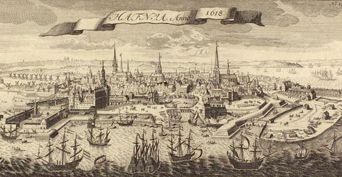
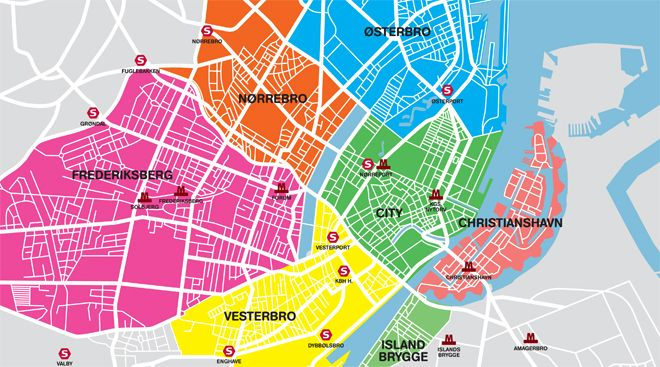
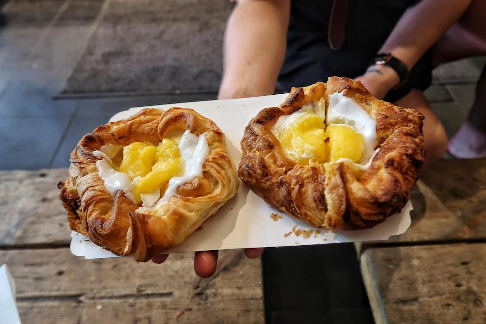

History
Although the earliest historical records of Copenhagen are from the end of the 12th century, recent archaeological finds in connection with work on the city's metropolitan rail system revealed the remains of a large merchant's mansion near today's Kongens Nytorv from c. 1020. Excavations in Pilestræde have also led to the discovery of a well from the late 12th century. The remains of an ancient church, with graves dating to the 11th century, have been unearthed near where Strøget meets Rådhuspladsen. These finds indicate that Copenhagen's origins as a city go back at least to the 11th century. Substantial discoveries of flint tools in the area provide evidence of human settlements dating to the Stone Age.
Many historians believe the town dates to the late Viking Age, and was possibly founded by Sweyn I Forkbeard. The natural harbour and good herring stocks seem to have attracted fishermen and merchants to the area on a seasonal basis from the 11th century and more permanently in the 13th century. The first habitations were probably centred on Gammel Strand (literally "old shore") in the 11th century or even earlier.
Demographics
The Municipality of Copenhagen is by far the most populous in the country and one of the most populous Nordic municipalities with 601,448 inhabitants (as of December 2016). There was a demographic boom in the 1990s and first decade of the 21st century, largely due to immigration to Denmark. According to figures from the first quarter of 2016, approximately 76% of the municipality's population was of Danish descent, defined as having at least one parent who was born in Denmark and has Danish citizenship. Much of the remaining 24% were of a foreign background, defined as immigrants (18%) or descendants of recent immigrants (6%). There are no official statistics on ethnic groups. The adjacent table shows the most common countries of birth of Copenhagen residents.
According to Statistics Denmark, Copenhagen's urban area has a larger population of 1,280,371 (as of 1 January 2016). The urban area consists of the municipalities of Copenhagen and Frederiksberg plus 16 of the 20 municipalities of the former counties Copenhagen and Roskilde. Metropolitan Copenhagen has a total of 2,016,285 inhabitants.
Cuisine
As of 2014, Copenhagen has 15 Michelin-starred restaurants, the most of any Scandinavian city. The city is increasingly recognized internationally as a gourmet destination. These include Den Røde Cottage, Formel B Restaurant, Grønbech & Churchill, Søllerød Kro, Kadeau, Kiin Kiin, Relæ, Restaurant AOC, Noma with two Stars and Geranium with three. Noma, was ranked as the Best Restaurant in the World by Restaurant in 2010, 2011, 2012, and again in 2014, sparking interest in the New Nordic Cuisine.
Apart from the selection of upmarket restaurants, Copenhagen offers a great variety of Danish, ethnic and experimental restaurants. It is possible to find modest eateries serving open sandwiches, known as smørrebrød – a traditional, Danish lunch dish; however, most restaurants serve international dishes. Danish pastry can be sampled from any of numerous bakeries found in all parts of the city. The Copenhagen Baker's Association dates back to the 1290s and Denmark's oldest confectioner's shop still operating, Conditori La Glace, was founded in 1870 in Skoubogade by Nicolaus Henningsen.